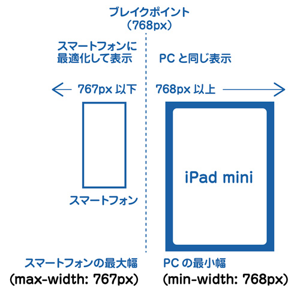
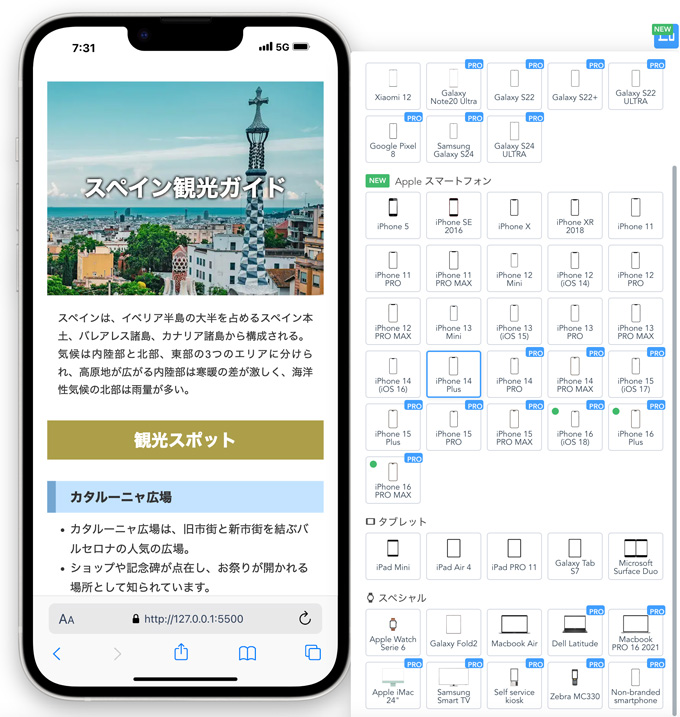
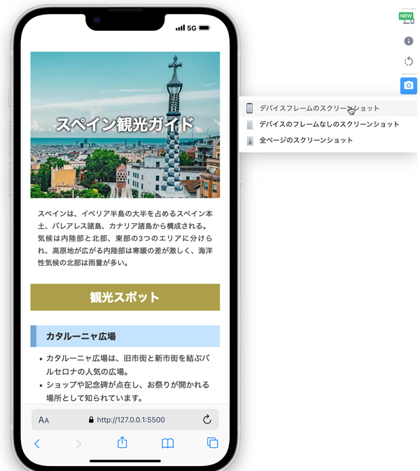
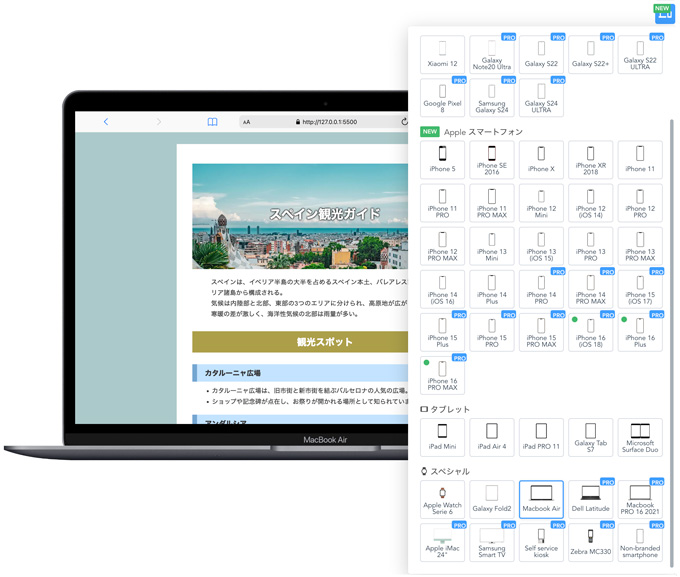
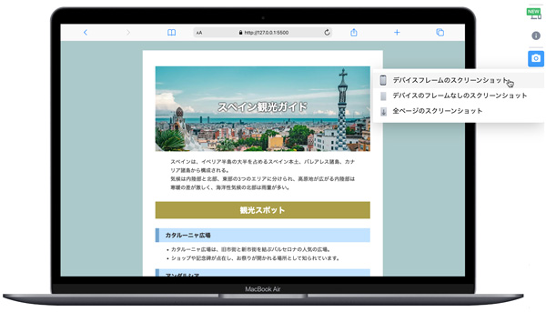
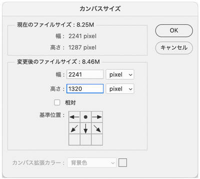
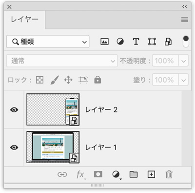
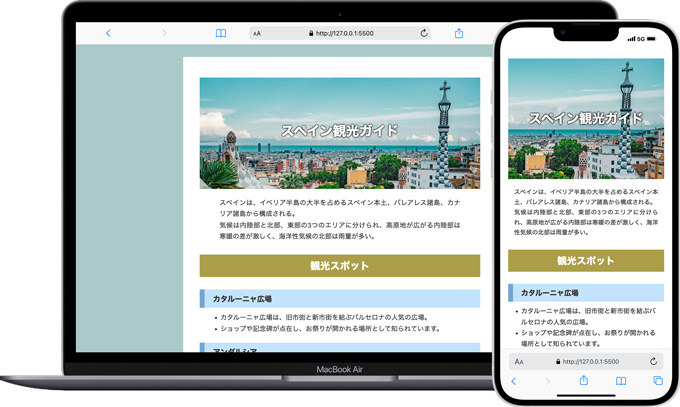
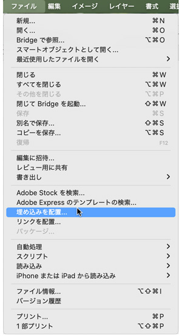
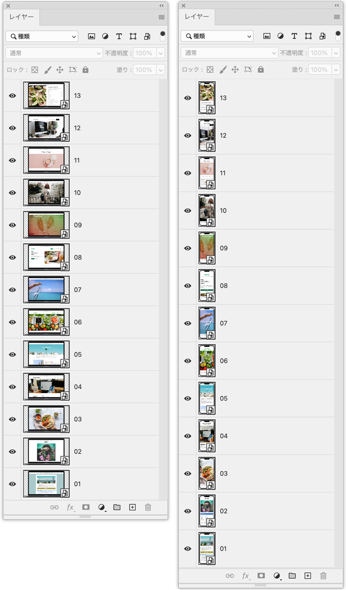

レスポンシブ対応の記述とモックアップ作成
ブレイクポイント
- ブレイクポイントを基準に表示を変化させます

すでにPC用の記述がある場合
- 横幅の最大値767px（767px以下の場合）
/* すでにあるPC用の記述 */ @media screen and (max-width: 767px) { /* ここにスマートフォンの記述 */ }
スマートフォンでプレビュー
モバイルシミュレーター - レスポンシブテストツール

モバイルの選択（iPhone 14 Plus）


PCの選択（Macbook Air）


モックアップの作り方
- PCとモバイルのスクリーンショットをそれぞれ「PSD」データとして保存する
- 「pc.psd」「sp.psd」の各ファイルのレイヤーは、「スマートオブジェクトに変換」をしておく（必須）
- 「pc.psd」のカンバスサイズを変更して、「sp.psd」と合成後の準備をしておく
※このサイズは、スクリーンショットを撮った解像度によって違いが出るため、少し下の余白を多めに取るぐらいの変更にする



- 「pc.psd」ファイルに「sp.psd」を「埋め込み配置」をします
※この時、各レイヤーが「スマートオブジェクト」になっていることが重要

各レイヤーのスマートオブジェクト内
